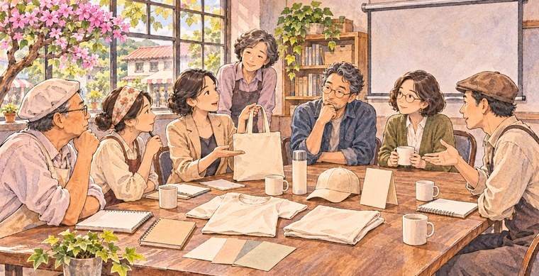

ECO-27 · 香港 · 虛構機構 · 15–20分鐘 · 租值消散 · 競賽機制設計 · 個人與集體誘因
花更多工夫，獎金卻沒有增加。

為了取勝而多下工夫，不一定能創造價值
競賽研究區分兩件事：爭取既有獎勵的誘因，以及創造額外價值。Mark Fey 以模型分析須付出成本的努力及參賽者的策略回應；Sheremeta 的實驗研究，以及 Chowdhury、Sheremeta 和 Turocy 合作的實驗研究，都顯示獎勵規則和參賽者行為會影響結果。這些實驗室研究結果並非對這個商會的預測。
有些競賽能促進有用的創新。Faria 及同事的模型明確區分不同類型的努力，並容許獎勵變動。這說明應看投入帶來甚麼成果，而不應把所有競爭都視為浪費。以下例子刻意簡化，假定有用產出維持不變。
課堂決定
虛構的課堂情境。 一個商會有1,200港元預算，用來獎勵兩名提交可用宣傳卡的會員。兩人都可用成本為100港元的基本方案製作符合要求的宣傳卡。加強方案的總成本為400港元，已包括基本方案，並可令卡片的版面更精緻。可行的只有這兩個方案，沒有其他未列明的開支水平。成本是實際投入的員工時間及耗用的物料，按機會成本計算，並非繳付給商會的費用。
主辦方須在兩種安排中擇一：設一項1,200港元的展示獎，由勝出者獨得全數獎金；或向每名交付可用宣傳卡的會員發放固定的600港元參與款項。無論採用哪種安排，會員均可在付出成本前選擇不參與，所得為零。兩人均屬風險中性，以預期淨金錢得益最大化為目標，知道規則和成本，並同時獨立作出選擇。沒有後續獎勵、地位方面的好處或重複博弈效應。
在競賽中，加強方案必定勝過基本方案。若兩人選擇相同方案，按個案設定的對稱評審程序，每人獲選的機會均為一半，只有一人獨得全數獎金。若只有一人參賽，該人便勝出。無論勝負，兩名參賽者均須自行承擔準備成本。若採用固定款項安排，兩個方案均符合資格，但選用加強方案不會多收款項。
主辦方重視的是可供公眾使用的宣傳卡和會員的淨得益，而非為花錢而花錢，或一味追求場面。活動負責人起初認為，加強方案或可令宣傳卡更實用，但這個說法尚未經驗證。兩種安排的獎勵預算及一般行政成本相同。目前尚未承諾頒獎或作出任何開支。
| 己方選擇／對手選擇 | 基本方案 · 100港元 | 加強方案 · 400港元 |
|---|
| 基本方案 · 100港元 | 有一半機會獲得1,200港元 | 沒有獎金 |
| 加強方案 · 400港元 | 必得1,200港元獎金 | 有一半機會獲得1,200港元 |
你的決定你暫時會選擇哪種獎勵安排？若對手選擇基本方案，會員有甚麼誘因改用加強方案？要令額外投入物有所值，你需要看到甚麼實際效益？
第二輪 · 多了一項資料
一項虛構的宣傳活動測試現已確認：基本方案和加強方案製作的宣傳卡同樣實用，觸及的受眾範圍、對銷售的影響及學習價值也完全相同。把版面做得更精緻，只會改變競賽排名。這些額外準備不會為商會、消費者或其他外界人士帶來好處。所有成本、方案限制及評審規則維持不變。
兩名會員都打算採用加強方案。如果兩人都這樣做，每人仍只有一半機會贏得金額不變的1,200港元獎金。在任何一人付出成本前，主辦方仍可改用固定款項安排。若採用這種安排，兩人都會提交以基本方案製作的宣傳卡，各獲600港元。
主辦方問：額外投入既然對個人而言是理性的，是否就算成功？還是說，這是本可避免的實際資源耗用？比較會員的預期得益、總資源成本，以及維持不變的有用產出。須把商會轉付的獎金和實際耗用的資源分開，不要把獎金本身算作新增的社會價值。
你的決定得知測試結果後，主辦方應選擇哪種安排？計算會員的預期淨得益及總資源成本，解釋為甚麼兩名參賽者都不會單方面減少投入，並說明甚麼情況會令你改變建議。
回答開場的決定題
若暫時傾向採用競賽，就須有證據顯示，更精緻的設計能增加有用產出，或帶來其他明確的好處，而且效益足以抵償成本。若對手選擇基本方案，採用加強方案可得1,200港元 − 400港元 = 800港元；同樣採用基本方案則可得600港元 − 100港元 = 500港元。改用加強方案令個人的預期得益增加300港元。這並不能證明宣傳活動的價值有所增加。
暫時選擇發放固定款項，可以避免雙方逐步加碼，但仍須確保以基本方案製作的宣傳卡達到實際品質要求。這不是甚麼也不做便可獲款。測試前，有用產出會否增加仍未確定，所以必須查明效益，而不能單憑這一點就認定哪種安排較好。
為甚麼雙方都維持較高投入
若對手選擇加強方案，自己也選加強方案，預期得益為600港元 − 400港元 = 200港元。選擇基本方案的得益為−100港元，不參與則為零。若對手選擇基本方案，改用加強方案可得800港元，而非500港元。因此，在個案指定的選項和偏好下，兩人都選擇加強方案是一個均衡：任何一方單獨改變選擇，都不會得益。
若兩人都選擇基本方案，每人可得500港元，但這並非穩定的競賽結果：任何一方都可改用加強方案，擊敗仍採用基本方案的對手，從而獲得800港元。單是呼籲會員克制，並不能改變這個誘因。以上是預期得益，並非必然到手的款額。當兩人都選擇加強方案，一人淨得800港元，另一人則損失400港元。
建議向符合要求的交付發放固定款項
得知第二輪結果後，應選擇這項安排： 每張可用的宣傳卡發放600港元。每名會員都選擇基本方案，淨得500港元；扣除200港元資源成本後，兩人合計淨得1,000港元。若採用競賽，而兩人都選擇加強方案，每人預期淨得200港元；扣除800港元資源成本後，兩人合計淨得400港元。固定款項安排可節省以下資源： 價值600港元的實際資源 同時保留兩張宣傳卡，獎勵預算亦維持在1,200港元。
競賽的準備工作共耗用價值800港元的資源，相當於獎金的三分之二。其中200港元是製作可用宣傳卡的必要成本，採用哪種安排都要付出；另外600港元則用於額外美化版面，可以避免。不要以固定款項安排為比較基準，就把整筆800港元視為浪費，也不要說獎金全數消失。這是部分租值消散，並非開支超過獎金。
區分款項轉移與價值創造
會員的合計淨得益包括商會發放的1,200港元。把商會與會員合併考慮，這筆款項只是轉移，並沒有帶來新增資源。在有用產出和其他成本不變的情況下，關鍵改善是節省價值600港元的資源。由於宣傳卡的共同價值未有量化，無法得出社會效益的絕對金額。
若額外投入能創造足夠的真正新增價值、能在貢獻不一的情況下改善評選結果，或若核實資格後發放款項的做法成本高昂或容易被鑽空子，就應改變建議。這些情況不在第二輪的簡化設定之內，不應憑空當作競賽的好處來挽救這個安排。應衡量產出和參與的全部成本，而不是單為開支增加而喝采。
教師說明
在揭示產出不變之前，先請學生計算單方面改用加強方案會帶來甚麼得益。然後比較基本方案與加強方案，把不參與的零得益也納入比較，並找出雙方為甚麼無法維持克制。可選方案數目有限，是個案的關鍵設定：這並不是連續型全付拍賣的均衡。對稱的評審機率和所有財務資料均屬虛構。
與 ECO-02 不同，這裏的核心成本是勝方和敗方都要承擔的實際準備成本，而不是轉付給賣方的拍賣款項。須區分競賽的總資源成本800港元與可避免的增量成本600港元。有關實驗中出價過高的研究說明了審慎設計的重要性，但本個案的結果並不以非理性行為或開支超過獎金為前提。這是供課堂分析的例子，並非建議舉辦涉及金錢的博弈活動。
第二輪
一項虛構的宣傳活動測試現已確認：基本方案和加強方案製作的宣傳卡同樣實用，觸及的受眾範圍、對銷售的影響及學習價值也完全相同。把版面做得更精緻，只會改變競賽排名。這些額外準備不會為商會、消費者或其他外界人士帶來好處。所有成本、方案限制及評審規則維持不變。
兩名會員都打算採用加強方案。如果兩人都這樣做，每人仍只有一半機會贏得金額不變的1,200港元獎金。在任何一人付出成本前，主辦方仍可改用固定款項安排。若採用這種安排，兩人都會提交以基本方案製作的宣傳卡，各獲600港元。
主辦方問：額外投入既然對個人而言是理性的，是否就算成功？還是說，這是本可避免的實際資源耗用？比較會員的預期得益、總資源成本，以及維持不變的有用產出。須把商會轉付的獎金和實際耗用的資源分開，不要把獎金本身算作新增的社會價值。
你的決定得知測試結果後，主辦方應選擇哪種安排？計算會員的預期淨得益及總資源成本，解釋為甚麼兩名參賽者都不會單方面減少投入，並說明甚麼情況會令你改變建議。